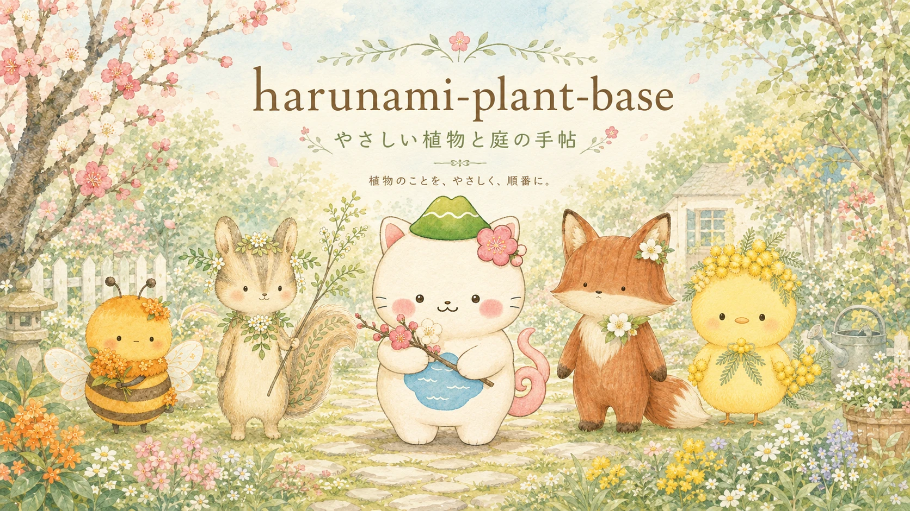
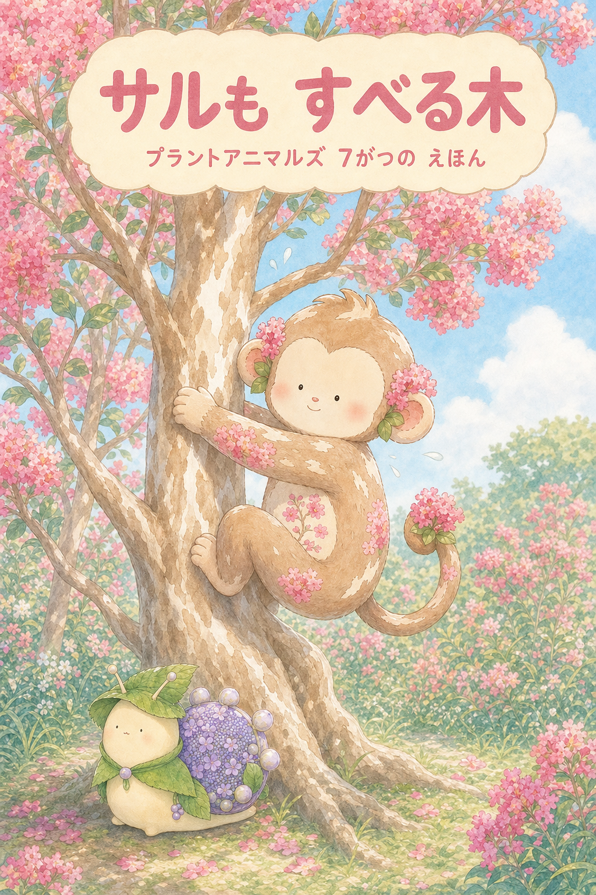
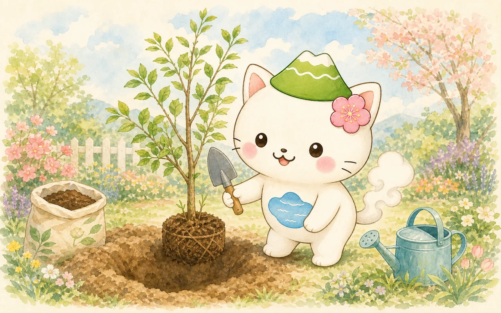
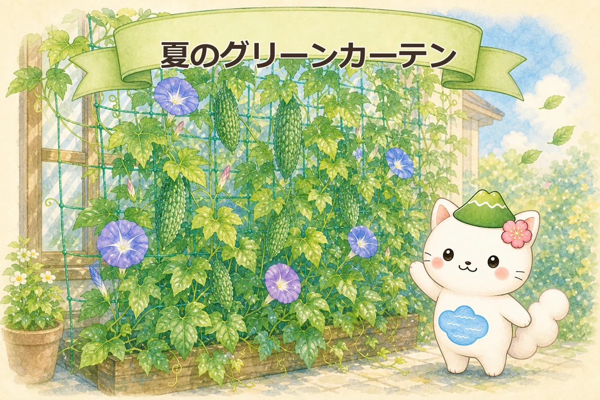
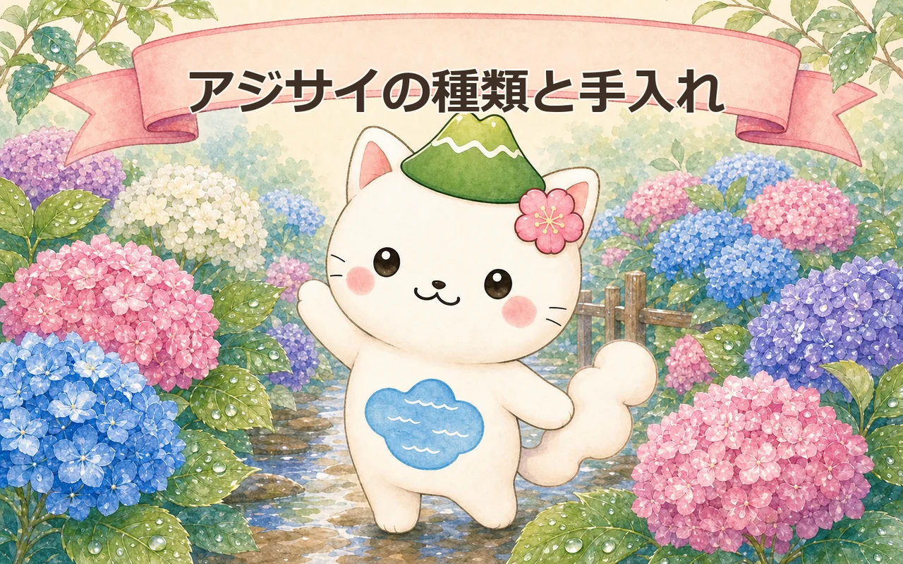
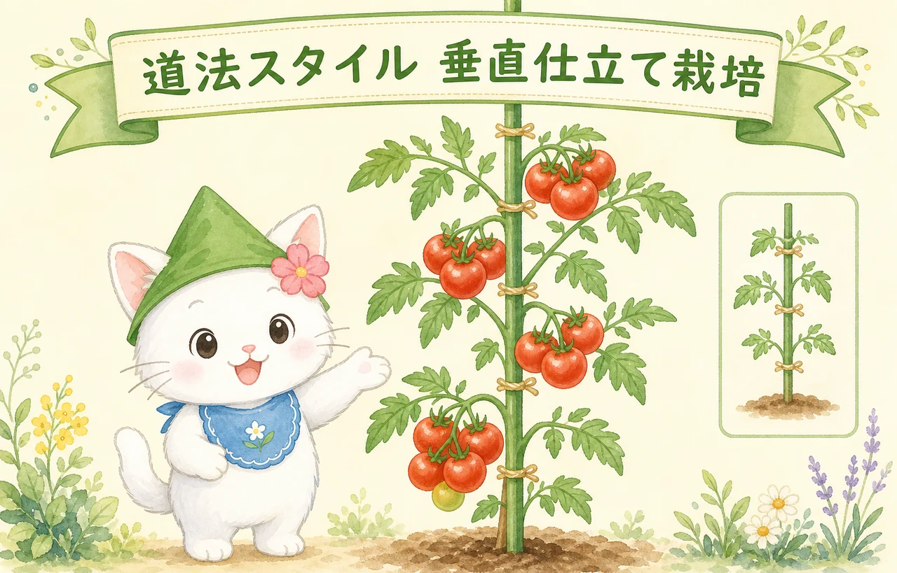
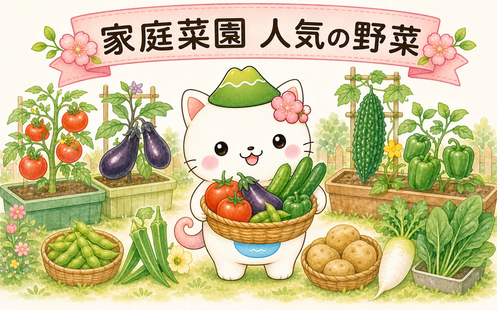
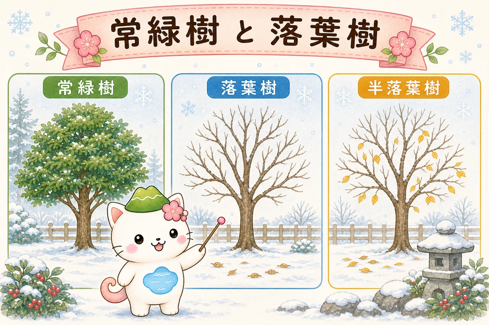
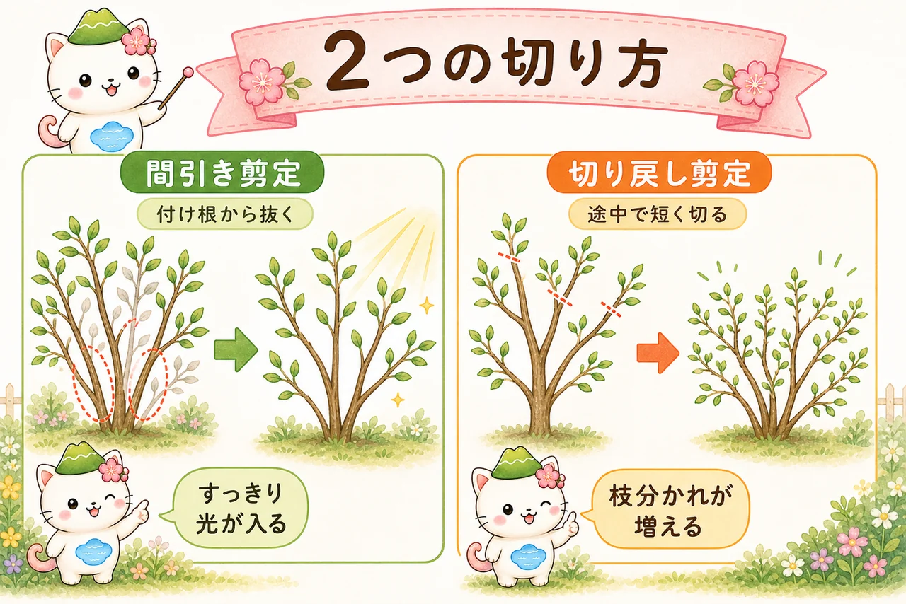
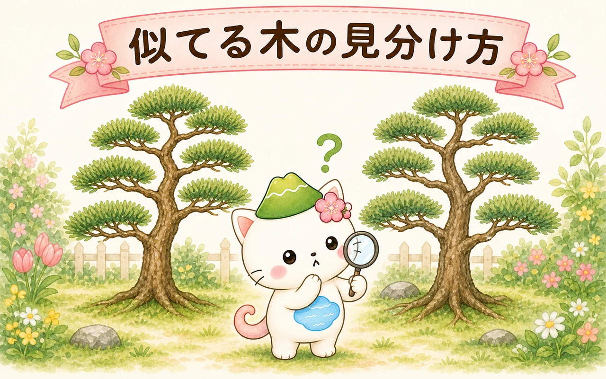

harunami plant base — やさしい植物と庭の手帖。植物のことを、やさしく、順番に。

植木・家庭菜園・庭づくりの「なぜ？」を、専門知識がなくても上から読み進めるだけでわかるように整理する、小さな植物サイトです。むずかしい言葉は、ねこのはるにゃさんがとなりでかみくだいてくれます。
🌳 植木・剪定
🥕 家庭菜園
🏡 庭づくり・造園

プラント アニマルズ
身近な庭木を、ひとりひとり「動物キャラ」にして紹介する図鑑。アオキからワシントンヤシまで、全132種を五十音順に。姿と短いひとことから、気になる木との出会いを。
図鑑をひらく →
7月の絵本
サルも すべる木
つるつるの幹にサルもトカゲもすってん転ぶ中、いちばんゆっくりなカタツムリのタマちゃんがてっぺんを目指す9ページの縦読み絵本です。
絵本を読む →記事を読む
トップページから各記事へ進めます植物アプリ
AI Plantgraphy ＝ スマホで作る自分だけの植物図鑑

庭づくりツール
garden-renovation-skills ＝ 写真と要望から庭の提案資料をAI生成

庭木の基本
庭木・苗木の植え方

夏の庭づくり
夏のグリーンカーテン・おすすめ植物8種

庭木・花木
アジサイの種類と手入れ

家庭菜園
道法スタイル・垂直仕立て栽培

家庭菜園
家庭菜園・人気の野菜10種

庭木
常緑樹と落葉樹の管理・剪定の違い

庭木・果樹
剪定の基本

庭木
似てる木の見分け方

病害虫
植物の病害虫の種類と対策

庭木の剪定
黒松の剪定と季節の管理

植物のしくみ
植物ホルモンと剪定

案内役・はるにゃさん
榛名山（はるなさん）のあたたかな雰囲気をモチーフにした、ねこのキャラクター。頭の榛名富士のぼうしと、おなかの榛名湖が目印です。このサイトでは、専門用語をかみくだく案内役として、各記事の図解やメモにいつも登場します。「むずかしそう」を「なるほど」に変えるのが、はるにゃさんの役目です。